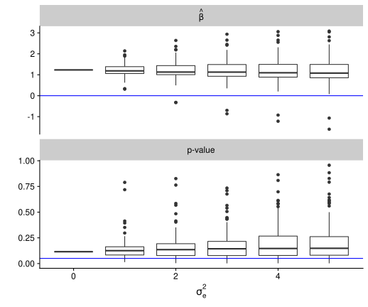

Evaluate the robustness of an estimate and inference to bias.
We can investigate the sensitivity of any analysis to taxonomic bias by simulating possible efficiency vectors, calibrating our observed MGS measurements by these efficiencies, and rerunning our analysis on the simulated and calibrated data. Specifically, we can take the observed proportion of each species in our dataset \(\hat{\text{prop}}_{i}(a)\), and “undo” the efficiencies to obtain the calibrated proportions \[\begin{align} \text{calibrated prop}_{i}(a) &= \left( \frac{\hat{\text{prop}}_{i}(a)}{\text{efficiency}_{i}} \right) \bigg / \sum_{i'} \left( \frac{\hat{\text{prop}}_{i'}(a)}{\text{efficiency}_{i'}} \right), \end{align}\] and the calibrated read counts \[\begin{align} \text{reads}_{i}(a) &= \text{total reads}(a) \times \text{calibrated prop}_{i}(a). \end{align}\] We can then rerun our data analysis using the calibrated read counts in place of our original data. If we do this repeatedly, each time using different realizations of the efficiency vector, we can investigate how the results of our analysis change. If the change is minimal, this suggests that our results are robust to unequal detection efficiencies in the different species. The converse would suggest that we need to be careful interpreting our results.
We illustrate this method using vaginal microbiome data from pregnant women published in a study by Callahan et al. (2017) seeking to replicate associations of specific genera (Lactobacillus, Gardnerella, and Ureaplasma) with preterm birth in two cohorts. For example, suppose we are interested in investigating if the genus Gardnerella is more abundant in the vaginal microbiome of women who give birth preterm, and we investigate this model by running corncob using preterm birth as a covariate in the mean and dispersion model. We could investigate the robustness of our findings using the following structure:
our_sim <- new_simulation("UndoGardnerella", "Undo Gardnerella relative abundance") %>%
generate_model(undo_efficiencies,
ps = cal %>%
filter_sample_data(cohort == "Stanford") %>%
tax_glom("genus") %>%
as_tibble,
sig_sq_e = as.list(seq(0, 5, length.out = 6)),
vary_along = "sig_sq_e") %>%
simulate_from_model(nsim = 25, index = 1:4) %>%
run_method(list(corncob_Gardnerella),
parallel = list(socket_names = 4, libraries = c("corncob", "speedyseq"))) %>%
evaluate(list(betahat_fit, pvalue_fit))
In brief, this approach uses the library simulator to generate random efficiencies and “undo” them as described above, then runs corncob on these generated datasets before finally obtaining the estimated coefficients on preterm birth and the p-value for the hypothesis test that the coefficient on preterm birth is zero. Let’s take a look at the components of the code.
First, we load the relevant libraries and our data (see Data setup),
Then we can create the function that generates random efficiencies and accordingly alters the observed counts:
undo_efficiencies <- function(ps, sig_sq_e) {
ps_ms <- ps %>% group_by(.sample) %>% mutate(mm = sum(.abundance)) %>% ungroup
ps_tax <- ps %>% select(`.otu`, `kingdom`:`species`) %>% distinct %>% tax_table
ps_sample <- ps %>% select(`.sample`, `subject_id`:`outcome`) %>% distinct %>% sample_data
new_model(name = "eff_undo", label = sprintf("sig_sq_e = %s", sig_sq_e),
params = list(ps_ms = ps_ms, ps_tax = ps_tax, ps_sample = ps_sample, sig_sq_e = sig_sq_e),
simulate = function(ps_ms, ps_tax, ps_sample, sig_sq_e, nsim) {
replicate(nsim,
{
effs_tib <- ps_ms %>%
select(genus) %>% distinct %>%
mutate("efficiency" = rnorm(nrow(.), mean = 0, sd = sqrt(sig_sq_e)) %>% exp)
ps_tib <- ps_ms %>%
full_join(effs_tib) %>%
group_by(.sample) %>%
mutate(p_ijs = (.abundance / efficiency) / sum(.abundance / efficiency)) %>%
mutate(w_ij = round(mm * p_ijs)) %>%
ungroup
phyloseq(ps_tib %>%
select(`.otu`, `.sample`, `w_ij`) %>%
pivot_wider(names_from=`.otu`, values_from=`w_ij`) %>%
otu_table(taxa_are_rows = F),
ps_tax,
ps_sample) %>%
tax_glom("genus")
},
simplify=F)
})
}
Next, we specify how we use our data to construct our estimates. We are using bbdml from the library corncob to model the relative abundance of ASV 8 (Gardnerella) using preterm birth as a covariate to model the mean and dispersion, but this is only one type of analysis that we might be interested in.
corncob_Gardnerella <- new_method("corncob", "Corncob",
method = function(model, draw) {
fit <- bbdml(formula = ASV8 ~ preterm,
formula_null= ~1,
phi.formula= ~ preterm,
phi.formula_null= ~1,
data = draw %>%
merge_samples2("subject_id", fun_otu = sum))
list(fit = fit,
summary = summary(fit))
})
Finally, we construct methods to obtain the estimated coefficient on preterm birth in the mean relative abundance model, and its p-value.
betahat_fit <- new_metric("betahat", "beta-hat",
metric = function(model, out) {
out$summary$coefficients[2,1]
})
pvalue_fit <- new_metric("pvalue", "p-value",
metric = function(model, out) {
out$summary$coefficients[2,4]
})
Now that we have all of the pieces, we can run them together as follows. The below code runs 100 simulations split across 4 cores; for testing, the commented code runs just 4 iterations.
our_sim <- new_simulation("UndoGardnerella", "Undo Gardnerella relative abundance") %>%
generate_model(undo_efficiencies,
ps = cal %>%
filter_sample_data(cohort == "Stanford") %>%
tax_glom("genus") %>%
as_tibble,
sig_sq_e = as.list(seq(0, 5, length.out = 6)),
vary_along = "sig_sq_e") %>%
# simulate_from_model(nsim = 4, index = 1) %>%
# run_method(list(corncob_Gardnerella)) %>%
simulate_from_model(nsim = 25, index = 1:4) %>%
run_method(list(corncob_Gardnerella),
parallel = list(socket_names = 4, libraries = c("corncob", "speedyseq"))) %>%
evaluate(list(betahat_fit, pvalue_fit))
#> ..Created model and saved in eff_undo/ps_63d55ce90e7c2b5932d2349d0790c865933f3e0d/sig_sq_e_0/model.Rdata
#> ..Created model and saved in eff_undo/ps_63d55ce90e7c2b5932d2349d0790c865933f3e0d/sig_sq_e_1/model.Rdata
#> ..Created model and saved in eff_undo/ps_63d55ce90e7c2b5932d2349d0790c865933f3e0d/sig_sq_e_2/model.Rdata
#> ..Created model and saved in eff_undo/ps_63d55ce90e7c2b5932d2349d0790c865933f3e0d/sig_sq_e_3/model.Rdata
#> ..Created model and saved in eff_undo/ps_63d55ce90e7c2b5932d2349d0790c865933f3e0d/sig_sq_e_4/model.Rdata
#> ..Created model and saved in eff_undo/ps_63d55ce90e7c2b5932d2349d0790c865933f3e0d/sig_sq_e_5/model.Rdata
#> ..Simulated 25 draws in 6.59 sec and saved in eff_undo/ps_63d55ce90e7c2b5932d2349d0790c865933f3e0d/sig_sq_e_0/r1.Rdata
#> ..Simulated 25 draws in 5.37 sec and saved in eff_undo/ps_63d55ce90e7c2b5932d2349d0790c865933f3e0d/sig_sq_e_0/r2.Rdata
#> ..Simulated 25 draws in 5.73 sec and saved in eff_undo/ps_63d55ce90e7c2b5932d2349d0790c865933f3e0d/sig_sq_e_0/r3.Rdata
#> ..Simulated 25 draws in 5.73 sec and saved in eff_undo/ps_63d55ce90e7c2b5932d2349d0790c865933f3e0d/sig_sq_e_0/r4.Rdata
#> ..Simulated 25 draws in 8.59 sec and saved in eff_undo/ps_63d55ce90e7c2b5932d2349d0790c865933f3e0d/sig_sq_e_1/r1.Rdata
#> ..Simulated 25 draws in 7.25 sec and saved in eff_undo/ps_63d55ce90e7c2b5932d2349d0790c865933f3e0d/sig_sq_e_1/r2.Rdata
#> ..Simulated 25 draws in 6.43 sec and saved in eff_undo/ps_63d55ce90e7c2b5932d2349d0790c865933f3e0d/sig_sq_e_1/r3.Rdata
#> ..Simulated 25 draws in 6.47 sec and saved in eff_undo/ps_63d55ce90e7c2b5932d2349d0790c865933f3e0d/sig_sq_e_1/r4.Rdata
#> ..Simulated 25 draws in 7.25 sec and saved in eff_undo/ps_63d55ce90e7c2b5932d2349d0790c865933f3e0d/sig_sq_e_2/r1.Rdata
#> ..Simulated 25 draws in 6.77 sec and saved in eff_undo/ps_63d55ce90e7c2b5932d2349d0790c865933f3e0d/sig_sq_e_2/r2.Rdata
#> ..Simulated 25 draws in 5.97 sec and saved in eff_undo/ps_63d55ce90e7c2b5932d2349d0790c865933f3e0d/sig_sq_e_2/r3.Rdata
#> ..Simulated 25 draws in 6.62 sec and saved in eff_undo/ps_63d55ce90e7c2b5932d2349d0790c865933f3e0d/sig_sq_e_2/r4.Rdata
#> ..Simulated 25 draws in 7.09 sec and saved in eff_undo/ps_63d55ce90e7c2b5932d2349d0790c865933f3e0d/sig_sq_e_3/r1.Rdata
#> ..Simulated 25 draws in 5.28 sec and saved in eff_undo/ps_63d55ce90e7c2b5932d2349d0790c865933f3e0d/sig_sq_e_3/r2.Rdata
#> ..Simulated 25 draws in 6.12 sec and saved in eff_undo/ps_63d55ce90e7c2b5932d2349d0790c865933f3e0d/sig_sq_e_3/r3.Rdata
#> ..Simulated 25 draws in 5.89 sec and saved in eff_undo/ps_63d55ce90e7c2b5932d2349d0790c865933f3e0d/sig_sq_e_3/r4.Rdata
#> ..Simulated 25 draws in 5.66 sec and saved in eff_undo/ps_63d55ce90e7c2b5932d2349d0790c865933f3e0d/sig_sq_e_4/r1.Rdata
#> ..Simulated 25 draws in 5.49 sec and saved in eff_undo/ps_63d55ce90e7c2b5932d2349d0790c865933f3e0d/sig_sq_e_4/r2.Rdata
#> ..Simulated 25 draws in 5.31 sec and saved in eff_undo/ps_63d55ce90e7c2b5932d2349d0790c865933f3e0d/sig_sq_e_4/r3.Rdata
#> ..Simulated 25 draws in 5.28 sec and saved in eff_undo/ps_63d55ce90e7c2b5932d2349d0790c865933f3e0d/sig_sq_e_4/r4.Rdata
#> ..Simulated 25 draws in 5.67 sec and saved in eff_undo/ps_63d55ce90e7c2b5932d2349d0790c865933f3e0d/sig_sq_e_5/r1.Rdata
#> ..Simulated 25 draws in 6.16 sec and saved in eff_undo/ps_63d55ce90e7c2b5932d2349d0790c865933f3e0d/sig_sq_e_5/r2.Rdata
#> ..Simulated 25 draws in 5.3 sec and saved in eff_undo/ps_63d55ce90e7c2b5932d2349d0790c865933f3e0d/sig_sq_e_5/r3.Rdata
#> ..Simulated 25 draws in 5.54 sec and saved in eff_undo/ps_63d55ce90e7c2b5932d2349d0790c865933f3e0d/sig_sq_e_5/r4.Rdata
#> ..Performed Corncob in 0.15 seconds (on average over 25 sims)
#> ..Performed Corncob in 0.15 seconds (on average over 25 sims)
#> ..Performed Corncob in 0.15 seconds (on average over 25 sims)
#> ..Performed Corncob in 0.15 seconds (on average over 25 sims)
#> ..Created
#> new("OutputRef", dir = "/home/michael/research/differential-abundance-theory/notebook/_posts/2021-10-18-evaluate-robustness-example", model_name = "eff_undo/ps_63d55ce90e7c2b5932d2349d0790c865933f3e0d/sig_sq_e_0", index = 1, method_name = "corncob", out_loc = "out", simulator.files = "files")
#> new("OutputRef", dir = "/home/michael/research/differential-abundance-theory/notebook/_posts/2021-10-18-evaluate-robustness-example", model_name = "eff_undo/ps_63d55ce90e7c2b5932d2349d0790c865933f3e0d/sig_sq_e_0", index = 2, method_name = "corncob", out_loc = "out", simulator.files = "files")
#> new("OutputRef", dir = "/home/michael/research/differential-abundance-theory/notebook/_posts/2021-10-18-evaluate-robustness-example", model_name = "eff_undo/ps_63d55ce90e7c2b5932d2349d0790c865933f3e0d/sig_sq_e_0", index = 3, method_name = "corncob", out_loc = "out", simulator.files = "files")
#> new("OutputRef", dir = "/home/michael/research/differential-abundance-theory/notebook/_posts/2021-10-18-evaluate-robustness-example", model_name = "eff_undo/ps_63d55ce90e7c2b5932d2349d0790c865933f3e0d/sig_sq_e_0", index = 4, method_name = "corncob", out_loc = "out", simulator.files = "files")
#> in parallel.
#> ..Performed Corncob in 0.15 seconds (on average over 25 sims)
#> ..Performed Corncob in 0.15 seconds (on average over 25 sims)
#> ..Performed Corncob in 0.15 seconds (on average over 25 sims)
#> ..Performed Corncob in 0.15 seconds (on average over 25 sims)
#> ..Created
#> new("OutputRef", dir = "/home/michael/research/differential-abundance-theory/notebook/_posts/2021-10-18-evaluate-robustness-example", model_name = "eff_undo/ps_63d55ce90e7c2b5932d2349d0790c865933f3e0d/sig_sq_e_1", index = 1, method_name = "corncob", out_loc = "out", simulator.files = "files")
#> new("OutputRef", dir = "/home/michael/research/differential-abundance-theory/notebook/_posts/2021-10-18-evaluate-robustness-example", model_name = "eff_undo/ps_63d55ce90e7c2b5932d2349d0790c865933f3e0d/sig_sq_e_1", index = 2, method_name = "corncob", out_loc = "out", simulator.files = "files")
#> new("OutputRef", dir = "/home/michael/research/differential-abundance-theory/notebook/_posts/2021-10-18-evaluate-robustness-example", model_name = "eff_undo/ps_63d55ce90e7c2b5932d2349d0790c865933f3e0d/sig_sq_e_1", index = 3, method_name = "corncob", out_loc = "out", simulator.files = "files")
#> new("OutputRef", dir = "/home/michael/research/differential-abundance-theory/notebook/_posts/2021-10-18-evaluate-robustness-example", model_name = "eff_undo/ps_63d55ce90e7c2b5932d2349d0790c865933f3e0d/sig_sq_e_1", index = 4, method_name = "corncob", out_loc = "out", simulator.files = "files")
#> in parallel.
#> ..Performed Corncob in 0.15 seconds (on average over 25 sims)
#> ..Performed Corncob in 0.15 seconds (on average over 25 sims)
#> ..Performed Corncob in 0.15 seconds (on average over 25 sims)
#> ..Performed Corncob in 0.15 seconds (on average over 25 sims)
#> ..Created
#> new("OutputRef", dir = "/home/michael/research/differential-abundance-theory/notebook/_posts/2021-10-18-evaluate-robustness-example", model_name = "eff_undo/ps_63d55ce90e7c2b5932d2349d0790c865933f3e0d/sig_sq_e_2", index = 1, method_name = "corncob", out_loc = "out", simulator.files = "files")
#> new("OutputRef", dir = "/home/michael/research/differential-abundance-theory/notebook/_posts/2021-10-18-evaluate-robustness-example", model_name = "eff_undo/ps_63d55ce90e7c2b5932d2349d0790c865933f3e0d/sig_sq_e_2", index = 2, method_name = "corncob", out_loc = "out", simulator.files = "files")
#> new("OutputRef", dir = "/home/michael/research/differential-abundance-theory/notebook/_posts/2021-10-18-evaluate-robustness-example", model_name = "eff_undo/ps_63d55ce90e7c2b5932d2349d0790c865933f3e0d/sig_sq_e_2", index = 3, method_name = "corncob", out_loc = "out", simulator.files = "files")
#> new("OutputRef", dir = "/home/michael/research/differential-abundance-theory/notebook/_posts/2021-10-18-evaluate-robustness-example", model_name = "eff_undo/ps_63d55ce90e7c2b5932d2349d0790c865933f3e0d/sig_sq_e_2", index = 4, method_name = "corncob", out_loc = "out", simulator.files = "files")
#> in parallel.
#> ..Performed Corncob in 0.15 seconds (on average over 25 sims)
#> ..Performed Corncob in 0.15 seconds (on average over 25 sims)
#> ..Performed Corncob in 0.15 seconds (on average over 25 sims)
#> ..Performed Corncob in 0.15 seconds (on average over 25 sims)
#> ..Created
#> new("OutputRef", dir = "/home/michael/research/differential-abundance-theory/notebook/_posts/2021-10-18-evaluate-robustness-example", model_name = "eff_undo/ps_63d55ce90e7c2b5932d2349d0790c865933f3e0d/sig_sq_e_3", index = 1, method_name = "corncob", out_loc = "out", simulator.files = "files")
#> new("OutputRef", dir = "/home/michael/research/differential-abundance-theory/notebook/_posts/2021-10-18-evaluate-robustness-example", model_name = "eff_undo/ps_63d55ce90e7c2b5932d2349d0790c865933f3e0d/sig_sq_e_3", index = 2, method_name = "corncob", out_loc = "out", simulator.files = "files")
#> new("OutputRef", dir = "/home/michael/research/differential-abundance-theory/notebook/_posts/2021-10-18-evaluate-robustness-example", model_name = "eff_undo/ps_63d55ce90e7c2b5932d2349d0790c865933f3e0d/sig_sq_e_3", index = 3, method_name = "corncob", out_loc = "out", simulator.files = "files")
#> new("OutputRef", dir = "/home/michael/research/differential-abundance-theory/notebook/_posts/2021-10-18-evaluate-robustness-example", model_name = "eff_undo/ps_63d55ce90e7c2b5932d2349d0790c865933f3e0d/sig_sq_e_3", index = 4, method_name = "corncob", out_loc = "out", simulator.files = "files")
#> in parallel.
#> ..Performed Corncob in 0.15 seconds (on average over 25 sims)
#> ..Performed Corncob in 0.15 seconds (on average over 25 sims)
#> ..Performed Corncob in 0.15 seconds (on average over 25 sims)
#> ..Performed Corncob in 0.15 seconds (on average over 25 sims)
#> ..Created
#> new("OutputRef", dir = "/home/michael/research/differential-abundance-theory/notebook/_posts/2021-10-18-evaluate-robustness-example", model_name = "eff_undo/ps_63d55ce90e7c2b5932d2349d0790c865933f3e0d/sig_sq_e_4", index = 1, method_name = "corncob", out_loc = "out", simulator.files = "files")
#> new("OutputRef", dir = "/home/michael/research/differential-abundance-theory/notebook/_posts/2021-10-18-evaluate-robustness-example", model_name = "eff_undo/ps_63d55ce90e7c2b5932d2349d0790c865933f3e0d/sig_sq_e_4", index = 2, method_name = "corncob", out_loc = "out", simulator.files = "files")
#> new("OutputRef", dir = "/home/michael/research/differential-abundance-theory/notebook/_posts/2021-10-18-evaluate-robustness-example", model_name = "eff_undo/ps_63d55ce90e7c2b5932d2349d0790c865933f3e0d/sig_sq_e_4", index = 3, method_name = "corncob", out_loc = "out", simulator.files = "files")
#> new("OutputRef", dir = "/home/michael/research/differential-abundance-theory/notebook/_posts/2021-10-18-evaluate-robustness-example", model_name = "eff_undo/ps_63d55ce90e7c2b5932d2349d0790c865933f3e0d/sig_sq_e_4", index = 4, method_name = "corncob", out_loc = "out", simulator.files = "files")
#> in parallel.
#> ..Performed Corncob in 0.15 seconds (on average over 25 sims)
#> ..Performed Corncob in 0.15 seconds (on average over 25 sims)
#> ..Performed Corncob in 0.15 seconds (on average over 25 sims)
#> ..Performed Corncob in 0.15 seconds (on average over 25 sims)
#> ..Created
#> new("OutputRef", dir = "/home/michael/research/differential-abundance-theory/notebook/_posts/2021-10-18-evaluate-robustness-example", model_name = "eff_undo/ps_63d55ce90e7c2b5932d2349d0790c865933f3e0d/sig_sq_e_5", index = 1, method_name = "corncob", out_loc = "out", simulator.files = "files")
#> new("OutputRef", dir = "/home/michael/research/differential-abundance-theory/notebook/_posts/2021-10-18-evaluate-robustness-example", model_name = "eff_undo/ps_63d55ce90e7c2b5932d2349d0790c865933f3e0d/sig_sq_e_5", index = 2, method_name = "corncob", out_loc = "out", simulator.files = "files")
#> new("OutputRef", dir = "/home/michael/research/differential-abundance-theory/notebook/_posts/2021-10-18-evaluate-robustness-example", model_name = "eff_undo/ps_63d55ce90e7c2b5932d2349d0790c865933f3e0d/sig_sq_e_5", index = 3, method_name = "corncob", out_loc = "out", simulator.files = "files")
#> new("OutputRef", dir = "/home/michael/research/differential-abundance-theory/notebook/_posts/2021-10-18-evaluate-robustness-example", model_name = "eff_undo/ps_63d55ce90e7c2b5932d2349d0790c865933f3e0d/sig_sq_e_5", index = 4, method_name = "corncob", out_loc = "out", simulator.files = "files")
#> in parallel.
#> ..Evaluated Corncob in terms of
#> beta-hat, p-value, Computing time (sec)
#> ..Evaluated Corncob in terms of
#> beta-hat, p-value, Computing time (sec)
#> ..Evaluated Corncob in terms of
#> beta-hat, p-value, Computing time (sec)
#> ..Evaluated Corncob in terms of
#> beta-hat, p-value, Computing time (sec)
#> ..Evaluated Corncob in terms of
#> beta-hat, p-value, Computing time (sec)
#> ..Evaluated Corncob in terms of
#> beta-hat, p-value, Computing time (sec)
#> ..Evaluated Corncob in terms of
#> beta-hat, p-value, Computing time (sec)
#> ..Evaluated Corncob in terms of
#> beta-hat, p-value, Computing time (sec)
#> ..Evaluated Corncob in terms of
#> beta-hat, p-value, Computing time (sec)
#> ..Evaluated Corncob in terms of
#> beta-hat, p-value, Computing time (sec)
#> ..Evaluated Corncob in terms of
#> beta-hat, p-value, Computing time (sec)
#> ..Evaluated Corncob in terms of
#> beta-hat, p-value, Computing time (sec)
#> ..Evaluated Corncob in terms of
#> beta-hat, p-value, Computing time (sec)
#> ..Evaluated Corncob in terms of
#> beta-hat, p-value, Computing time (sec)
#> ..Evaluated Corncob in terms of
#> beta-hat, p-value, Computing time (sec)
#> ..Evaluated Corncob in terms of
#> beta-hat, p-value, Computing time (sec)
#> ..Evaluated Corncob in terms of
#> beta-hat, p-value, Computing time (sec)
#> ..Evaluated Corncob in terms of
#> beta-hat, p-value, Computing time (sec)
#> ..Evaluated Corncob in terms of
#> beta-hat, p-value, Computing time (sec)
#> ..Evaluated Corncob in terms of
#> beta-hat, p-value, Computing time (sec)
#> ..Evaluated Corncob in terms of
#> beta-hat, p-value, Computing time (sec)
#> ..Evaluated Corncob in terms of
#> beta-hat, p-value, Computing time (sec)
#> ..Evaluated Corncob in terms of
#> beta-hat, p-value, Computing time (sec)
#> ..Evaluated Corncob in terms of
#> beta-hat, p-value, Computing time (sec)Here’s how the estimated coefficient on preterm birth changes under different draws from a distribution given by \(\text{efficiency}_{i} \overset{iid}{\sim} \text{LogNormal}(0, \sigma^2_e)\), and how the p-value for testing the null hypothesis that the coefficient on preterm birth is zero:
ev_df <- our_sim %>% evals %>% as.data.frame
model_df <- our_sim %>% model %>% as.data.frame
ev_with_model_params <- dplyr::right_join(model_df, ev_df, by = c("name" = "Model")) %>% tibble
f_names <- list('p-value' = "p-value",
'beta-hat' = expression(hat(beta)))
f_labeller <- function(variable, value){return(f_names[value])}
ev_with_model_params %>%
pivot_longer(cols = betahat:pvalue, names_to="eval") %>%
mutate(eval = ifelse(eval == "pvalue", "p-value", "beta-hat")) %>%
ggplot(aes(x = sig_sq_e, group = sig_sq_e, y = value)) +
geom_boxplot() +
geom_abline(aes(slope = slope, intercept = intercept), color = "blue",
tibble(eval = c("p-value", "beta-hat"), slope = c(0,0), intercept = c(0.05, 0))) +
xlab(expression(sigma[e]^2)) +
# ggtitle("Corncob results for testing\nH0: Mean Gardnerella relative abundance is equal for preterm & full-term") +
facet_wrap(~eval, scales="free_y", nrow = 2, labeller = f_labeller) +
ylab("") +
cowplot::theme_cowplot()

While the estimate of the coefficient does not change on average, we see more variation in its estimate as the variation in the efficiencies increases. For some realizations from a model with large variation in the efficiencies, we even see a change in the sign of \(\hat{\beta}\) from positive to negative. Furthermore, we see a corresponding increase in the range of p-values, suggesting that more variation in the efficiencies can lead to either deattenuated estimates (larger p-values) or more precise non-zero estimates (smaller p-values).
A major advantage of this approach is that any distribution of efficiency vectors can be investigated. For example, we could specifically investigate how Gardnerella being low- or high-efficiency impacts our results. We could also investigate more sophisticated distributions for the efficiencies, such as correlated efficiencies across phylogeny.
The following code was used to download and prepare the data from Callahan et al. (2017) for analysis; it is not evaluated when this document is knit. The first code chunk downloads the ASV abundance matrix, sample metadata, and taxonomy assignments for the vaginal samples.
library(tidyverse)
library(speedyseq)
# Download --------------------------------------------------------------------
dl_path <- here::here("notebook/_data", "callahan2017repl")
link <- "https://stacks.stanford.edu/file/druid:yb681vm1809/RepRefine_Scripts.tar.gz"
if (!dir.exists(dl_path)) {
dir.create(dl_path)
download.file(link, file.path(dl_path, basename(link)))
system2("tar", args = c("-xvf", file.path(dl_path, basename(link)), "-C", dl_path))
}
load(file.path(dl_path, "RepRefine_Scripts", "input", "processed.rda"))
# This loads:
# df: the sample metadata
# st: the sequence table (in counts)
# ft: the sequence table normalized to frequencies / proportions
# tax: taxonomy assignment matrix
#
# To confirm relationship between ft and st, run
# all.equal(ft, st %>% apply(1, function(x) x / sum(x)) %>% t)
#
# The taxonomy matrix has an extra column with a duplicate name of "Species"
# that is all NAs, so let's remove that
tax <- tax[, -8]
# Import into phyloseq --------------------------------------------------------
sam <- sample_data(df)
st <- otu_table(st, taxa_are_rows = FALSE)
tax <- tax_table(tax)
ps <- phyloseq(sam, st, tax)
# Check that all samples and taxa made it into the phyloseq object
stopifnot(all.equal(colnames(st), taxa_names(ps)))
stopifnot(all.equal(rownames(sam), sample_names(ps)))
# Add ASV sequences to the refseq() slot
seqs <- taxa_names(ps) %>% rlang::set_names() %>% Biostrings::DNAStringSet()
ps <- merge_phyloseq(ps, seqs)
# Rename the ASVs to simpler names (ASV1, ASV2, ...). The full sequences remain
# in `refseq(ps)`.
taxa_names(ps) <- paste0("ASV", seq(ntaxa(ps)))
# Clean up objects
rm(tax, df, sam, st, ft, seqs)
Next, we use munging functions from janitor and speedyseq to select the metadata of primary interest, standardize format of column names, and convert categorical variables to factors.
ps1 <- ps %>%
select_sample_data(SubjectID, Cohort, Race, preterm, Outcome) %>%
rename_with_sample_data(janitor::make_clean_names) %>%
rename_with_tax_table(janitor::make_clean_names) %>%
mutate_sample_data(
across(c(subject_id, cohort, race, outcome), factor),
)
Finally, we save the phyloseq object for use in the analysis.
sessioninfo::session_info()
#> ─ Session info ──────────────────────────────────────────────────────────────────
#> setting value
#> version R version 4.1.1 (2021-08-10)
#> os Arch Linux
#> system x86_64, linux-gnu
#> ui X11
#> language (EN)
#> collate en_US.UTF-8
#> ctype en_US.UTF-8
#> tz America/New_York
#> date 2021-10-25
#>
#> ─ Packages ──────────────────────────────────────────────────────────────────────
#> package * version date lib source
#> ade4 1.7-17 2021-06-17 [1] CRAN (R 4.1.0)
#> ape 5.5 2021-04-25 [1] CRAN (R 4.1.0)
#> assertthat 0.2.1 2019-03-21 [1] CRAN (R 4.0.0)
#> backports 1.2.1 2020-12-09 [1] CRAN (R 4.0.3)
#> Biobase 2.52.0 2021-05-19 [1] Bioconductor
#> BiocGenerics 0.38.0 2021-05-19 [1] Bioconductor
#> biomformat 1.20.0 2021-05-19 [1] Bioconductor
#> Biostrings 2.60.1 2021-06-06 [1] Bioconductor
#> bitops 1.0-7 2021-04-24 [1] CRAN (R 4.1.0)
#> bookdown 0.22 2021-04-22 [1] CRAN (R 4.1.0)
#> broom 0.7.9 2021-07-27 [1] CRAN (R 4.1.0)
#> bslib 0.2.5.1 2021-05-18 [1] CRAN (R 4.1.0)
#> cellranger 1.1.0 2016-07-27 [1] CRAN (R 4.0.0)
#> cli 3.0.1 2021-07-17 [1] CRAN (R 4.1.0)
#> cluster 2.1.2 2021-04-17 [2] CRAN (R 4.1.1)
#> codetools 0.2-18 2020-11-04 [2] CRAN (R 4.1.1)
#> colorspace 2.0-2 2021-08-11 [1] R-Forge (R 4.1.1)
#> corncob * 0.2.0 2021-03-11 [1] CRAN (R 4.0.5)
#> cowplot 1.1.1 2021-08-27 [1] Github (wilkelab/cowplot@555c9ae)
#> crayon 1.4.1 2021-02-08 [1] CRAN (R 4.0.4)
#> data.table 1.14.2 2021-09-27 [1] CRAN (R 4.1.1)
#> DBI 1.1.1 2021-01-15 [1] CRAN (R 4.0.4)
#> dbplyr 2.1.1 2021-04-06 [1] CRAN (R 4.0.5)
#> digest 0.6.28 2021-09-23 [1] CRAN (R 4.1.1)
#> distill 1.2 2021-01-13 [1] CRAN (R 4.1.0)
#> downlit 0.2.1 2020-11-04 [1] CRAN (R 4.0.3)
#> dplyr * 1.0.7 2021-06-18 [1] CRAN (R 4.1.0)
#> ellipsis 0.3.2 2021-04-29 [1] CRAN (R 4.1.0)
#> evaluate 0.14 2019-05-28 [1] CRAN (R 4.0.0)
#> fansi 0.5.0 2021-05-25 [1] CRAN (R 4.1.0)
#> farver 2.1.0 2021-02-28 [1] CRAN (R 4.0.4)
#> fastmap 1.1.0 2021-01-25 [1] CRAN (R 4.0.4)
#> forcats * 0.5.1 2021-01-27 [1] CRAN (R 4.0.4)
#> foreach 1.5.1 2020-10-15 [1] CRAN (R 4.0.3)
#> fs 1.5.0 2020-07-31 [1] CRAN (R 4.0.2)
#> generics 0.1.0 2020-10-31 [1] CRAN (R 4.0.3)
#> GenomeInfoDb 1.28.1 2021-07-01 [1] Bioconductor
#> GenomeInfoDbData 1.2.6 2021-05-31 [1] Bioconductor
#> ggplot2 * 3.3.5 2021-06-25 [1] CRAN (R 4.1.0)
#> glue 1.4.2 2020-08-27 [1] CRAN (R 4.0.2)
#> gtable 0.3.0 2019-03-25 [1] CRAN (R 4.0.0)
#> haven 2.4.3 2021-08-04 [1] CRAN (R 4.1.1)
#> here 1.0.1 2020-12-13 [1] CRAN (R 4.0.5)
#> highr 0.9 2021-04-16 [1] CRAN (R 4.1.0)
#> hms 1.1.1 2021-09-26 [1] CRAN (R 4.1.1)
#> htmltools 0.5.2 2021-08-25 [1] CRAN (R 4.1.1)
#> httr 1.4.2 2020-07-20 [1] CRAN (R 4.0.2)
#> igraph 1.2.6 2020-10-06 [1] CRAN (R 4.0.3)
#> IRanges 2.26.0 2021-05-19 [1] Bioconductor
#> iterators 1.0.13 2020-10-15 [1] CRAN (R 4.0.3)
#> jquerylib 0.1.4 2021-04-26 [1] CRAN (R 4.1.0)
#> jsonlite 1.7.2 2020-12-09 [1] CRAN (R 4.0.3)
#> knitr 1.36 2021-09-29 [1] CRAN (R 4.1.1)
#> labeling 0.4.2 2020-10-20 [1] CRAN (R 4.0.3)
#> lattice 0.20-44 2021-05-02 [2] CRAN (R 4.1.1)
#> lifecycle 1.0.1 2021-09-24 [1] CRAN (R 4.1.1)
#> lubridate 1.7.10 2021-02-26 [1] CRAN (R 4.0.4)
#> magrittr * 2.0.1 2020-11-17 [1] CRAN (R 4.0.3)
#> MASS 7.3-54 2021-05-03 [2] CRAN (R 4.1.1)
#> Matrix 1.3-4 2021-06-01 [2] CRAN (R 4.1.1)
#> mgcv 1.8-36 2021-06-01 [2] CRAN (R 4.1.1)
#> modelr 0.1.8 2020-05-19 [1] CRAN (R 4.0.0)
#> multtest 2.48.0 2021-05-19 [1] Bioconductor
#> munsell 0.5.0 2018-06-12 [1] CRAN (R 4.0.0)
#> nlme 3.1-152 2021-02-04 [2] CRAN (R 4.1.1)
#> nvimcom * 0.9-102 2021-10-25 [1] local
#> permute 0.9-5 2019-03-12 [1] CRAN (R 4.0.0)
#> phyloseq * 1.36.0 2021-05-19 [1] Bioconductor
#> pillar 1.6.3 2021-09-26 [1] CRAN (R 4.1.1)
#> pkgconfig 2.0.3 2019-09-22 [1] CRAN (R 4.0.0)
#> plyr 1.8.6 2020-03-03 [1] CRAN (R 4.0.0)
#> purrr * 0.3.4 2020-04-17 [1] CRAN (R 4.0.0)
#> R6 2.5.1 2021-08-19 [1] CRAN (R 4.1.1)
#> Rcpp 1.0.7 2021-07-07 [1] CRAN (R 4.1.0)
#> RCurl 1.98-1.3 2021-03-16 [1] CRAN (R 4.0.5)
#> readr * 2.0.2 2021-09-27 [1] CRAN (R 4.1.1)
#> readxl 1.3.1 2019-03-13 [1] CRAN (R 4.0.0)
#> reprex 2.0.1 2021-08-05 [1] CRAN (R 4.1.1)
#> reshape2 1.4.4 2020-04-09 [1] CRAN (R 4.0.0)
#> rhdf5 2.36.0 2021-05-19 [1] Bioconductor
#> rhdf5filters 1.4.0 2021-05-19 [1] Bioconductor
#> Rhdf5lib 1.14.2 2021-07-06 [1] Bioconductor
#> rlang 0.4.11 2021-04-30 [1] CRAN (R 4.1.0)
#> rmarkdown * 2.11 2021-09-14 [1] CRAN (R 4.1.1)
#> rprojroot 2.0.2 2020-11-15 [1] CRAN (R 4.0.3)
#> rstudioapi 0.13 2020-11-12 [1] CRAN (R 4.0.3)
#> rvest 1.0.1 2021-07-26 [1] CRAN (R 4.1.0)
#> S4Vectors 0.30.0 2021-05-19 [1] Bioconductor
#> sass 0.4.0 2021-05-12 [1] CRAN (R 4.1.0)
#> scales 1.1.1 2020-05-11 [1] CRAN (R 4.0.0)
#> sessioninfo 1.1.1 2018-11-05 [1] CRAN (R 4.0.0)
#> simulator * 0.2.3 2021-10-25 [1] Github (jacobbien/simulator@aef35ab)
#> speedyseq * 0.5.3.9018 2021-06-29 [1] Github (mikemc/speedyseq@ceb941f)
#> stringi 1.7.5 2021-10-04 [1] CRAN (R 4.1.1)
#> stringr * 1.4.0 2019-02-10 [1] CRAN (R 4.0.0)
#> survival 3.2-11 2021-04-26 [2] CRAN (R 4.1.1)
#> tibble * 3.1.5 2021-09-30 [1] CRAN (R 4.1.1)
#> tidyr * 1.1.4 2021-09-27 [1] CRAN (R 4.1.1)
#> tidyselect 1.1.1 2021-04-30 [1] CRAN (R 4.1.0)
#> tidyverse * 1.3.1 2021-04-15 [1] CRAN (R 4.1.0)
#> tzdb 0.1.2 2021-07-20 [1] CRAN (R 4.1.0)
#> utf8 1.2.2 2021-07-24 [1] CRAN (R 4.1.0)
#> vctrs 0.3.8 2021-04-29 [1] CRAN (R 4.1.0)
#> vegan 2.5-7 2020-11-28 [1] CRAN (R 4.0.3)
#> withr 2.4.2 2021-04-18 [1] CRAN (R 4.0.5)
#> xfun 0.26 2021-09-14 [1] CRAN (R 4.1.1)
#> xml2 1.3.2 2020-04-23 [1] CRAN (R 4.0.0)
#> XVector 0.32.0 2021-05-19 [1] Bioconductor
#> yaml 2.2.1 2020-02-01 [1] CRAN (R 4.0.0)
#> zlibbioc 1.38.0 2021-05-19 [1] Bioconductor
#>
#> [1] /home/michael/.local/lib/R/library
#> [2] /usr/lib/R/library